XY Plot¶
This command explores about XYPlot. User can create, export and import XY data and graph. The XYPlot panel is a dockable vertically. User can invoke XYPlot panel from ‘Tools’ toolbar.
In general, XYPlots are classified into Editable and Non-Editable. Imported and Merged Plots are always non-editable.
Note
In case of transient plot, maximum of first 500 node IDs or curves are considered for plot. It ignore other IDs.
A vertical time line (datum) is updated and displayed during CAE transient animation in Transient and Min Max plots.
Path Plot
X axis : IDs Path or CAE Result
Y axis: CAE Result
Inputs : ID sets, Instances. A Node ID set or path is a sequential list of IDs.
User can define multiple paths or Node ID sets. One curve refers to one Node ID set per instance. User can fix the instance and vary in defining the Node ID sets. It will help user to understand how each path varies against the sequence. User can fix a single Node ID set and vary in selection of instances. This plot helps user to understand how the same sequential path varies between instances or time steps. User can vary in defining the Node ID sets and selection of instances.
Same Instance but different Node ID sets
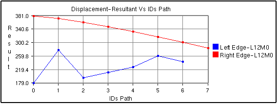
Same Node ID set but different instances
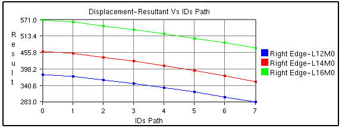
Transient Plot
X axis: Time/Frequency/Instance Number/ CAE Result.
Y axis: CAE Result.
Input: Node ID sets. Instances.
Each curve refers to a nodal ID and how its CAE result varies over time or frequency or instances.
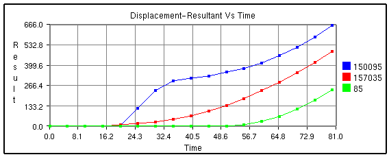
Min Max Plot
X axis: Time/Frequency/Instance Number/ CAE Result.
Y axis: CAE Result.
Input: Instances.
Min curve refers to minimum of CAE result over the instances.
Max curve refers to maximum of CAE result over the instances.
Note: Minimum and maximum values are computed from the results of visible parts. So the min/max curves will vary according to visible parts.
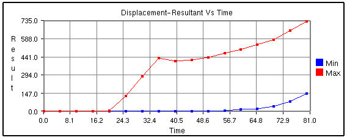
Force Deflection Plot
X axis: Maximum of displacement result.
Y axis: Sum of reaction forces.
Input: Node ID sets, Instances.
A curve refers to one Node ID set, sum of forces of Node ID set list and how it varies over the maximum displacement of Node ID set among over instances. This type will be listed only if CAE model contains ‘Displacement’ and ‘Reaction Force’ results.
This is a special case of transient plot. A set of IDs are considered as input to this plot. For each instance or time step, Reaction Force / Force Loads and Displacement values of these IDs are considered. These maximum displacement values for all instances provides the range for X axis. Sum of Reaction Force values is considered for Y axis. This plot contains a single curve.
For example,
Let number of instances be ‘4’.Let the ID’s selected be { ID1, ID2, ID3}.The following table provides Reaction Force and Displacement values of these IDs over the instances.
Time Step
|
Reaction Force/ Force Loads |
Displacement |
||||||
ID1 |
ID2 |
ID3 |
Sum(ID1+ID2+ID3) |
ID1 |
ID2 |
ID3 |
Max(ID1,ID2,ID3) |
|
T1 |
U11 |
U12 |
U13 |
F1 |
V11 |
V12 |
V13 |
D1 |
T2 |
U21 |
U22 |
U23 |
F2 |
V21 |
V22 |
V23 |
D2 |
T3 |
U31 |
U32 |
U33 |
F3 |
V31 |
V32 |
V33 |
D3 |
T4 |
U41 |
U42 |
U43 |
F4 |
V41 |
V42 |
V43 |
D4 |
X Axis Range = Min/Max (D1,D2,D3,D4);
Y Axis Range = Min/Max (F1,F2,F3,F4);
In other words, the data points of the curve are as follows,
{ (D1,F1), (D2,F2), (D3,F3), (D4,F4) }.
Steps:
Click New.
Select Force Deflection as Plot Type.
Select Node ID sets using ‘Add’ option.
Click Apply button.
Plot is updated now.
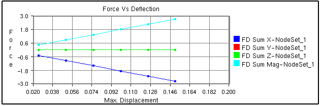
Harmonic Plot
X axis: Angle (0 to 360)
Y axis: Complex Derived Result
Input: Node ID sets, Instances.
This plot is applicable for only complex Eigen result. Harmonic plot option will display the variation of any complex result with respect to angle (= ωt). Using this plot, user can identify the angle for which a derived result is maximum.
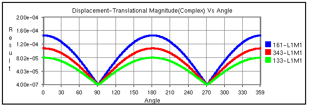
XYPlot Panel
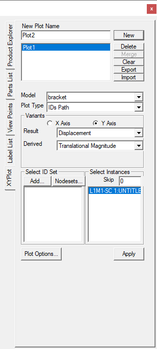
Plot Name
Enter plot name.
New
Creates an empty XYPlot template. Created plot will be appended to the list box by its name.
Delete
Deletes user selected plots.
Merge
Merges selected plots into a new XYPlot.
Clear
Clears current graph data.
Export
Exports the graph table data into a comma separated excel file. (csv)
Import
Imports the comma seperated excel file in a specific format.
Model
Allows user to select a CAE model.
Plot Type
Possible plot types of selected CAE model will be listed. User can select one of them.
Variants
User should define the X and Y axis variants.
Result
Allows user to select a possible result for X/Y axis.
Derived
Allows user to select a derived scalar type.
Complex
Allows user to select complex component of results and enter angle in degrees. This options is enabled and applicable for complex eigen data result.
Add
Pops up a Node ID set dialog. It helps user to define Node ID sets. Defined Node ID set names are appended to the XYPlot panel as well in the popped up panel.
Select ID set
Allows user to select multiple Node ID sets.
Select Instances
Allows user to select multiple instance names.
Skip
Allows user to filter and select instances by skipping user specified number. It helps user a lot in case of huge instance list.
How to add datum lines?
Select either X or Y axis
Enter a value, which is within the range. Otherwise it is ignored.
Select a color corresponding to datum value from the color window.
Click Add button.
Datum line and color will be added and rendered immediately.
Further it adds to datum list combo box.
Repeat the steps to add more datum lines.
Select a datum line to be deleted by its value.
Click ‘Del’ button to delete it.
Click ‘Del All’ button to delete all datum lines for the axis.
Datum lines are drawn in stipple lines by default.
VCollab stores all datum lines into viewpoint and cax.
Below is a sample plot with datum lines for each axis. 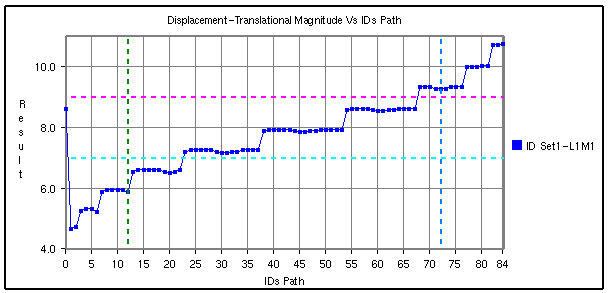
How to create an XYPlot?
Select XYPlot in the left span.
If there is no left span, click ‘Edit | XYPlot’ menu item.
Enter the XYPlot name in the text box.
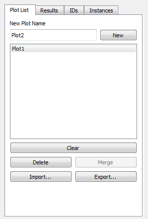
Click ‘New’ button.
Make sure that an empty XYPlot is displayed in the viewer and plot name is appended in the list box.
Select a CAE model from the drop down list.
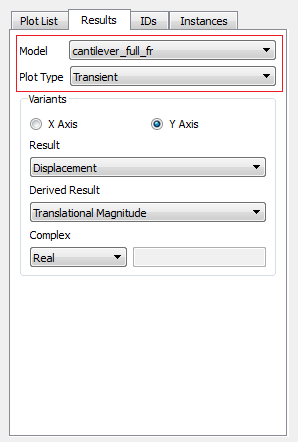
Select the plot type you wish to build.
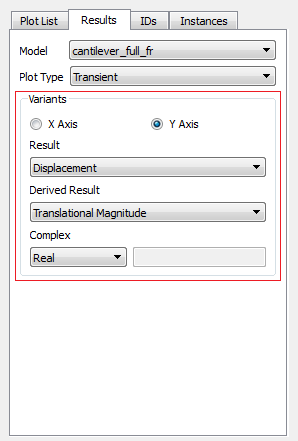
Select the variants for X and Y axis. An X variant may be a CAE result or result attribute and Y variant should be of CAE result.
If the result is complex, please select complex component Real, Imaginary, Magnitude, Phase and Angle.
Select the proper derived scalar for both the axes.
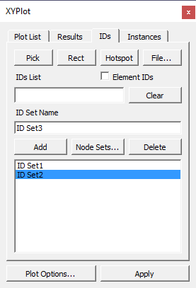
Click ‘Add’ button to define the ID sets.
User has following options to provide Node ID set.
One is to enter directly the known Node IDs in the text box separated by comma,
Second by picking Node IDs in the viewer,
Third is by providing a file which contains Node IDs and
Fourth is by window selection on the model.
Fifth is by getting CAE probed or hotspot labels.
To pick the Node ID from the viewer, enable the ‘Pick’ push button.
To pick the Node ID/ Element ID from the viewer, enable the ‘Pick’ push button.
Click Nodes in viewer. Node ID points are highlighted with red color. Node IDs are appended to the text box in the dialog for each click.
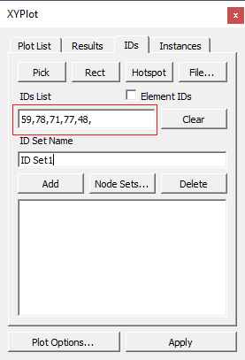
All points are connected by a line to show the sequence or path.
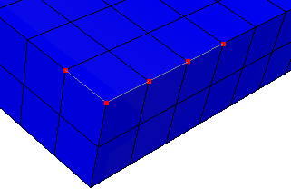
To select by window, click ‘Rect’ button which enables mouse mode to window selection.
Click and drag to define the window on the model using left mouse button.
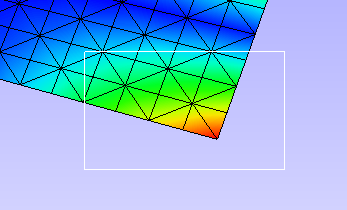
All node IDs within the window are highlighted as red spots.
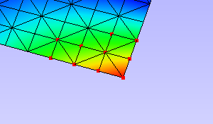
Click ‘Hotspots’ button to bring all IDs for probed or hotspot labels existing.
Enter a ID set name.
Click ‘Add’ button to create the ID set or/and ‘Close’ button to close window.
Created ID set are listed in the XYPlot panel.
Or Click ‘Node Sets…’ button to select node sets from CAE Nodeset manager.
Select the ID sets required for your plot. Please note that ID set selection is not required for Min Max XYPlot.
Select the Instances required for the plot. If the instance list is too large for selection, user can filter using the ‘Skip’ option.
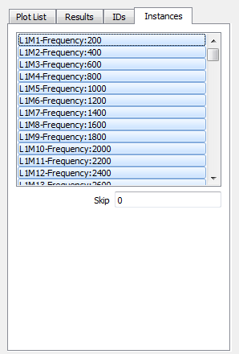
Skip option skips n number of instances between every consecutive selection. Where n is the number entered by user in the ‘Skip’ text.
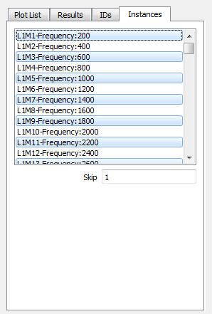
Click ‘Apply’ to construct the XYPlot with the above information and displayed in the viewer.
XY Plot Options Panel
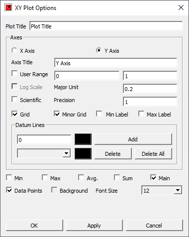
Plot Title
Displays plot title and allows user to edit it.
Axes Title
Displays axes title and allows user to edit it.
User Range
Allows user to edit min and max value.
Log. Scale
Toggles between Logarithmic and Decimal Scale for the selected axis.
Major Unit
Major unit for axis tick mark.
Scientific
Toggles between Scientific and Decimal format.
Precision
Allows user to change the precision value in the format.
Grid
Displays axis grid.
Minor Grid
Splits Major Grid into further 5 minor grids.
Min Label
Displays the minimum result data point in a label.
Max Label
Displays the maximum result data point in a label.
Datum Lines
Allows user to add datum line for the selected axis
Add
Enter a value and select a color and click Addd button to add a datum line.
- Delete/Delete
All
Allows user to select a datum line by value and delete it. Delete all deletes all datum lines.
Min
Show/Hides a curve with minimum of all y axis values against x axis invariant values.
Max
Show/Hides a curve with maximum of all y axis values against x axis invariant values.
Sum
Displays a curve with sums of all y axis values against x axis invariant values.
Avg.
Show/Hides a curve with average of all y axis values against x axis invariant values.
Main
Show/Hides the actual curves
Data Points
Allows user to show / hide data points
Background
Allows user to set a background with user defined color.
Font Size
Allows user to select and set font size for xyplot.
OK/Apply
Applies the modifications.
How to modify the XYPlot style?
Create a plot and construct with CAE data
XYPlot can be modified with text formats.
Click ‘Plot Options’ in the XYPlot panel, Or
Use “Ctrl + Left Mouse Button Double Click”.
It pops up ‘XYPlot Options’ dialog.
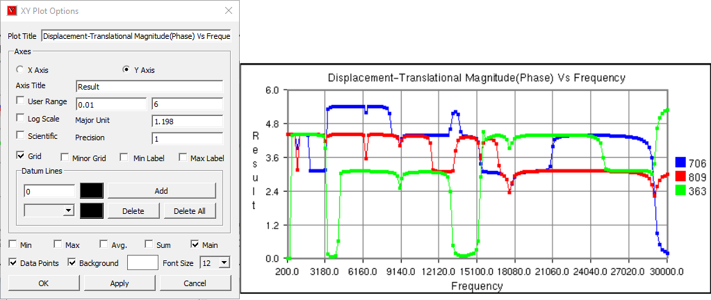
Change the plot titles.
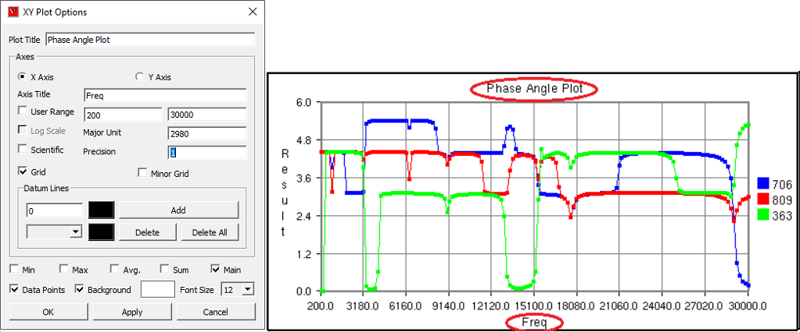
Change Y axis user range, major unit and precision values.
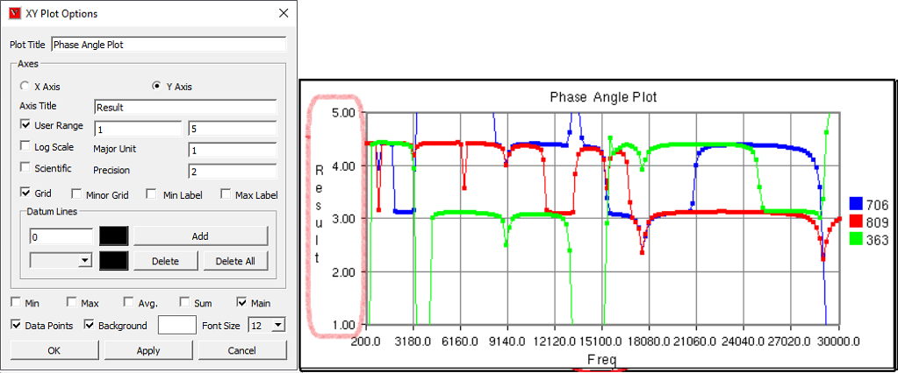
Change X Axis range, major unit and precision values.
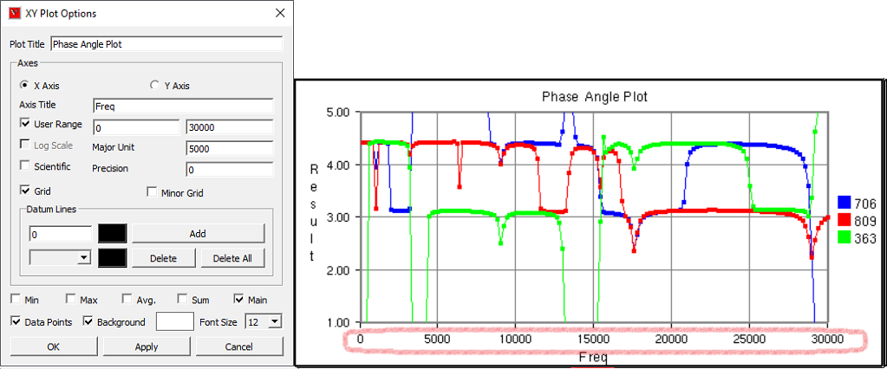
Grids for each axis can be switched on/off.
Click Sum, Max, Min and Average options and uncheck main.
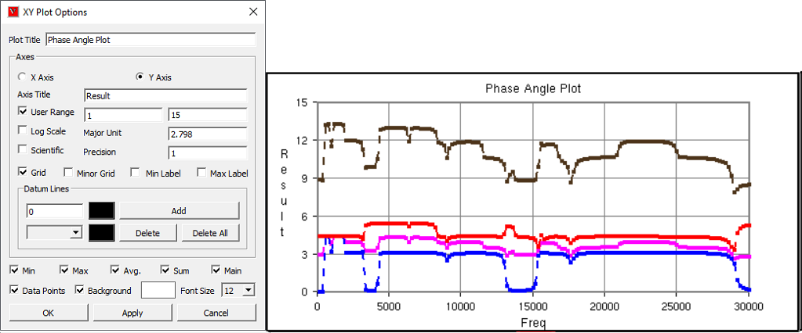
All these special curves in stippled lines.
Sum Curve is in dark brown, Max curve is in Red, Min Curve in blue and Average curve is in magenta
If there is large variation between curves then log. scale can be used for corresponding axis.
Scientific format can be used if the tick mark text is too lengthy and overlaps with next tick.
How to select, move and resize the plot?
Click a plot name in the plot list of XYPlot panel. Or
Double click the plot in the viewer with mouse left button.
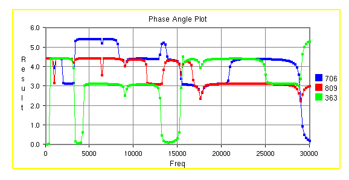
The XYPlot will be highlighted with highlight color.
The highlighted plot is ready for moving resizing.
Move mouse cursor over plot. Mouse cursor will change to
Click with mouse left button inside the plot and drag the mouse to move the plot.
Move the mouse to the plot edges and notice that mouse cursor symbol is changing to
 .
.Click and drag the mouse with resize symbol to resize the plot.
User can select plot regions too by double clicking.
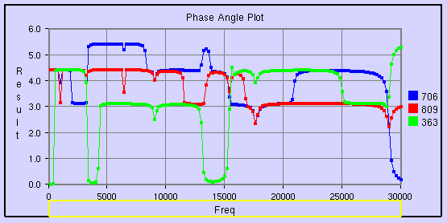
Selected region can be resized.
{kind=link}
How to merge plots?
Select XYPlots in the plot list panel.
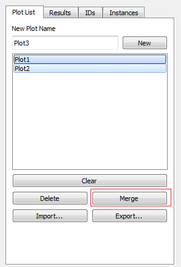
Click ‘Merge’ button.
A new ‘Non-Editable’ plot is created and appended in the list. All dialog controls will be disabled for ‘Non-Editable’ Plot.
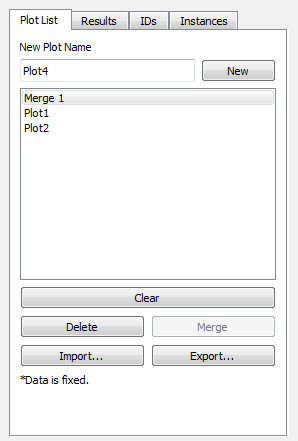
The same plot is displayed and highlighted in the viewer.
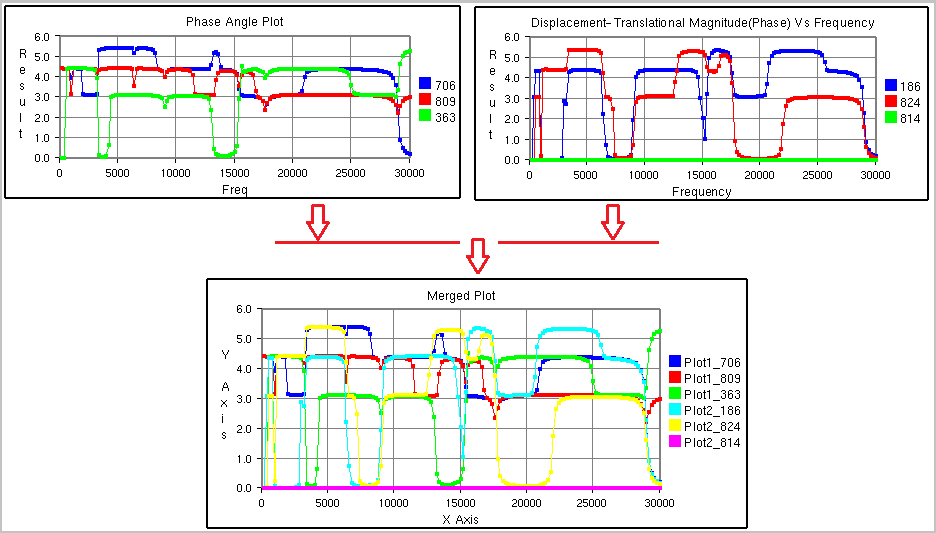
How to export and import XYPlot data?
Select XYPlots in the plot list panel.
Click ‘Export’ button.
It pops up file-save dialog.
Enter a file name.
Plot name is suffixed to the file name to differ between other plots. Each plot is exported as one csv file.
Click ‘Import’ button to load existing plot files.
It pops up file browser dialog with filter .csv files.
Even the csv file should be in a particular format.
Select all the XYPlot csv files and click open.
All plots are imported as ‘Non-Editable’ plots as it does not contain CAE information.
XYPlot Data File Format
This is a comma separated value (CSV) file and can be viewed in spread sheet. This format contains only values and header descriptions with single x axis invariant column.
Format 1 - VCOLLAB_XYPLOT_FILE_CSV_X_SINGLE
In this format, x axis values are same for all curves. First column refers to X axis and other columns refers to curve Y axis values.
Line 1
File Type Header
VCOLLAB_XYPLOT_FILE_CSV_X_SINGLE
Line 2
Titles (Optional)
#Titles,<plot_title>,<x-axis_tile>, <y-axis_title>
Line 3
Column Headers
<X axis Invariant>,<Curve1 Name>,<Curve 2 Name>, …,
Line 4
Value 1
<val>,<val>,<val>,…,
Line 5
Value 2
<val>,<val>,<val>,…,
Line …
Value ..
<val>,<val>,<val>,…,
Line N
Value N
<val>,<val>,<val>,…,
<EOF>
Example :
VCOLLAB_XYPLOT_FILE_CSV_X_SINGLE
Time,Node1, Node2, Node3,
0.0, 0.0, 0.5, 0.023,
0.1, 2.0, 0.35,1.023,
0.25,3.0,0.023,2.653,
0.302, 4.0,0.02,2.023,
0.43,13.0,0.5,1.023,
0.5,17.0,1.5, 2.023,
Format 2 - VCOLLAB_XYPLOT_FILE_CSV_X_SINGLE_ATTRIBUTE
Here one more column is introdouced to track the data points based on its attribute values. This will be useful to compare two different curve positions for a given attribute. Attribute can be time, frequency, angle, etc.
Line 1
File Type Header
VCOLLAB_XYPLOT_FILE_CSV_X_SINGLE_ATTRIBUTE
Line 2
Titles (Optional)
#Titles,<plot_title>,<x-axis_tile>, <y-axis_title>
Line 3
Column Headers
<Attribute_Name>, <X axis Invariant>, <Curve1 Name>,<Curve 2 Name>, …,
Line 4
Value 1
<attrib_val>,<val>,<val>,<val>,…,
Line 5
Value 2
<attrib_val>,<val>,<val>,<val>,…,
Line …
Value ..
<attrib_val>,<val>,<val>,<val>,…,
Line N
Value N
<attrib_val>,<val>,<val>,<val>,…,
<EOF>
Example :
Format 3 - VCOLLAB_XYPLOT_FILE_CSV_X_MULTIPLE
This format contains multiple curves without any constant X axis invariant. As there is no common relation curve datapoints, each curve is written one after the other in two columns.
Line 1
File Type Header
VCOLLAB_XYPLOT_FILE_CSV_X_MULTIPLE
Line 2
Titles (Optional)
#Titles,<plot_title>,<x-axis_tile>, <y-axis_title>
Line 3
Column Headers
<X Axis_Name>, <Y Axis Name>
Line 4
Curve1 Name
[Curve Name: curve1]
Line 5
Value 1
<val>,<val>,
Line 6
Value 2
<val>,<val>,
Line …
Value ..
<val>,<val>,
Line k
Value k
<val>,<val>,
Line k+1
Empty Space
Curve1 Name
[Curve Name: curve 2]
Value 1
<val>,<val>,
Value 2
<val>,<val>,
…
Value ..
<val>,<val>,
Line N
Value N
<val>,<val>,
<EOF>
Example:
Format 4 - VCOLLAB_XYPLOT_FILE_CSV_X_MULTIPLE_ATTRIBUTE
This format contains multiple curves without any constant X axis invariant. As there is no common relation curve datapoints, each curve is written one after the other in two columns.
Line 1
File Type Header
VCOLLAB_XYPLOT_FILE_CSV_X_MULTIPLE_ATTRIBUTE
Line 2
Titles (Optional)
#Titles,<plot_title>,<x-axis_tile>, <y-axis_title>
Line 3
Column Headers
<Attribute Name>, <X Axis_Name>, <Y Axis Name>
Line 4
Curve1 Name
[Curve Name: curve1]
Line 5
Value 1
<atrib_val>,<val>,<val>,
Line 6
Value 2
<atrib_val>,<val>,<val>,
Line …
Value ..
<atrib_val>,<val>,<val>,
Line k
Value k
<atrib_val>,<val>,<val>,
Line k+1
Empty Space
Curve2 Name
[Curve Name: curve 2]
Value 1
<atrib_val>,<val>,<val>,
Value 2
<atrib_val>,<val>,<val>,
…
Value ..
<atrib_val>,<val>,<val>,
Line N
Value N
<atrib_val>,<val>,<val>,
<EOF>
Note
Line 2 in all formats, is optional. User can use this format without line number 2.
Example:
VCOLLAB_XYPLOT_FILE_CSV_X_MULTIPLE_ATTRIBUTE
Time,Velocity,Result
[Curve Name:N201]
0,0,0,
4.99443,5.97401e-06,0,
9.99323,2.80677e-05,0.000371262,
14.9916,0.00137967,0.00325967,
19.993,0.00841877,0.0122644,
24.9934,0.0215457,0.0405959,
29.9992,0.0280345,0.172643,
34.9985,0.043332,0.49279,
[Curve Name:N234]
0,0,0,
9.99323,0.324686,0.787124,
19.993,6.10108,9.28285,
29.9992,154.139,283.757,
34.9985,84.6285,436.429,
|
Binout Plot
User Interface panel
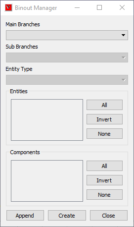
Main Branches |
Lists main branches in binout data. |
Sub Branches |
Lists sub branches or sub directories |
Entity type |
This option is enabled if there is a classification among entities. |
Entities |
Lists all entities available for selected main branch, sub branch and entity type. Its not enabled for some main branches. |
Components |
Lists all result components available to the entities. |
All |
Selects all entities or components. |
Invert |
Inverts the selection or entities or components. |
None |
Deselects all selection. |
Append |
Appends the data into current XYPlot. |
Create |
Clears current XYPlot data and appends binout data. |
How to Import LSDyna binout data into VCollab XYPlot?
Click Import button to pop up file browser dialog.
Select LSDyna Binout files (binout) in the file type drop down in the file browser dialog.
Select a binout file, which will be validated against binout format.
It throws error if file format validation fails.
Else, a new user interface for Binout pops up.
Select a main branch, which changes all other lists.
Select a sub branch which changes other list under sub branch.
Entity type will be enabled only if there is a group classification based on result component or entity levels (master, slave, etc).
Select an entity type if it is enabled.
Select multiple entities using Ctrl+ Mouse left button click.
Select multiple components.
Click ‘Create’ option to create a new plot with these data.
Error messages will pop up for missing minimum selection data.
Click ‘Append’ to append the data to current XYPlot.
Importing history Data
History files can be generated from VMoveCAE. History data are written into *.json (JSON file format).
The following syntax in VMoveCAEBatch generates history file (*.json) in addition to usual cax file.
Syntax:
VMoveCAEBatch.exe –export-history-data=<history_file> <input_odb_file> <output_cax_file>
Example:
VMoveCAEBatch.exe –export-history-data=”history.json” abaqusviewer_tutorial.odb caxviewer_tutorial.cax
These history data can be imported into VCollab Pro - XYPlot moduule. XYPlot pops ups history data interface when a json file is imported.
History plot panel
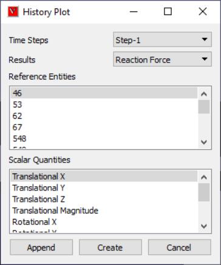
Time Steps |
Lists all time steps. |
Results |
Lists history results. |
Reference Entities |
This may be Global or Node / Elemet IDs. |
Scalar Quantities |
Lists possible scalar results that can be derived for current selected result. |
Append |
Appends the curve to current XYPlot. |
Create |
Create a new XYPlot with selected result and entities. |
Cancel |
Closes the panel. |
History file format (JSON)
“Tables”: [
{
“Name”: “Step-1”, “X Axis”: {
“Name”: “Time”,
“Values”: [ 0,0.01,0.02,0.02,1]
},
“Results”: [
{
“Name”: “Displacement”,
“Result Type”: “Vector”,
“References”: [
{
“ID”: ” 1284”,
“Type”: “Node”,
“Components”: [
{
“Component Type”: “X”,
“Values”: [ 0, 0.0025201, 0.00478624, 0.07505231 ]
},
{
“Component Type”: “X”,
“Values”: [ 0,0.00305285, 0.00646493,0.10231862 ]
},
{
“Component Type”: “X”,
“Values”: [ 0,0.00305285, 0.00646493,0.10231862 ]
},
{
“Component Type”: “Z”,
“Values”: [ 0,-0.06862792,-0.13732414,-0.13732414]
}
]
},
{
“ID”: ” 1169”,
“Type”: “Node”,
“Components”: [
{
“Component Type”: “X”,
“Values”: [ 0.00478624, 0.00798198, 0.01256604, 0.00298961 ]
},
{
“Component Type”: “Y”,
“Values”: [ 0.00646493, 0.01191834, 0.02039632, 0.00066798 ]
}, {
“Component Type”: “Z”,
“Values”: [-0.13732414,-0.24054897,-0.39588991,-0.03863986]
}
]
}
]
}
]
},
{
“Name”: “Step-2”,
“X Axis”: {
“Name”: “Time”,
“Values”: [ 0,0.5,1]
},
“Results”: [
{
“Name”: “ALLEE”,
“Result Type”: “Scalar”,
“References”: [
{
“ID”: “”,
“Type”: “Global”,
“Components”: [
{
“Component Type”: “”,
“Values”: [ 0,0,0]
}
]
}
]
},
{
“Name”: “ALLKL”,
“Result Type”: “Scalar”,
“References”: [
{
“ID”: “”,
“Type”: “Global”,
“Components”: [
{
“Component Type”: “”,
“Values”: [0,0.2,0.6]
}
]
}
]
}
]
}
]
}
How to import History Plot (json) files?
Go to XYPlot panel
Click ‘Import’ button.
It pops up file browser dialog.
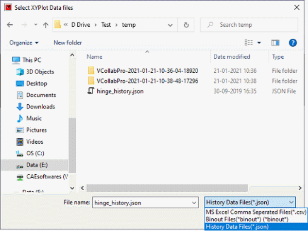
Change file list filter into ‘History Data Files (*.json)’
Browse the appropriate history data file.
Select the file and click ‘Open’.
It pops up ‘History Plot’ dialog.
Select a time step from the dropdown list.
Select a result from the dropdown list.
Select reference entities if available.
Select the scalar quanitities if available
Click ‘Append’ button to append the history curve into the existing plot.
Click ‘Create’ button to create a new XYPlot and append the selected curves.